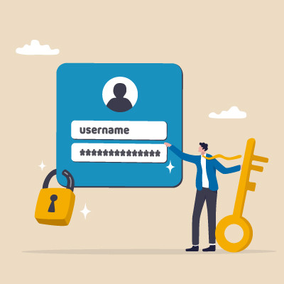
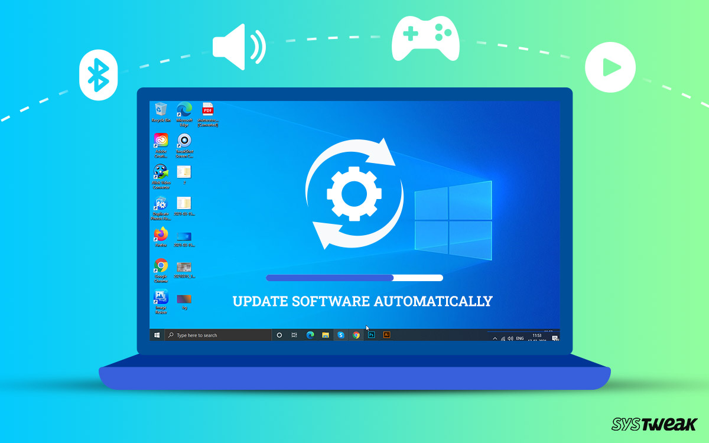
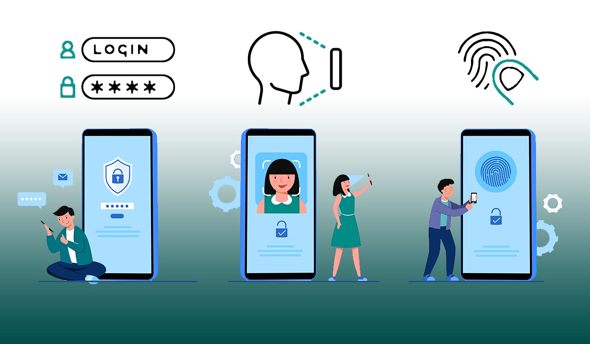

Following network security best practices helps protect data, devices, and networks from cyberattacks. These actions reduce risks and improve overall safety.

Use Strong Passwords
Always use strong, unique passwords for all accounts and devices. Avoid easily guessed words or personal information, and change passwords regularly.

Keep Software Up to Date
Regularly update operating systems, apps, and antivirus software. Updates often include security patches that fix vulnerabilities before attackers can exploit them.

Enable Multi-Factor Authentication
Multi-Factor Authorization adds an extra layer of security by requiring a second form of verification in addition to a password. This helps prevent unauthorized access even if passwords are stolen.
Backup Data Regularly
Create regular backups of important files and store them securely. Backups help recover data in case of cyberattacks or accidental deletion.